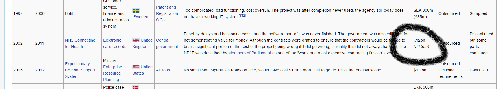

The Big NHS Computer
The Prime Minister said ..
“The possibilities are enormous if we can get this right”
Tonight I intend to ...
Tell a (long) story ... as fast as I can
Focus on the operations part of the story
http://martinsumner.github.io/presentations/spine2_devops.html#/
See Wikipedia
List of failed and overbudget custom software projects - Permanent Failures
The Spine Part - The supplier speaks ...
“It has made transformational healthcare applications available to approximately 1.3 million NHS healthcare staff across England, providing care to circa 50 million UK citizens.”
“20-plus customised NHS Spine applications ... combined cutting edge technologies to meet the demanding service level agreements and response times required ”
More of their own words
“The contract was (and continues to be) one of the largest IT programmes in the world, consuming over 15,000 man-years of effort to date ... Over 3,000 servers are hosted and supported”
“(The delivery) methodology is now an internationally recognised standard for complex software development programme delivery”
What did we build again?
What does this kind of success look like?
Spine can release with £30m in transition costs alone
It costs over £50m per annum to keep the lights on
Around 50% of the original business case met
The system is stable when untouched
“They shouldn't build these death stars any more. They keep getting blown up”
How did our rebel alliance approach the problem?
Making predictions is hard ... especially about the future
If the answer is big and expensive ... re-frame the question
Take responsibility ... no other “who” to blame
What did/does it cost?
Took 100 man years from inception to 1-years service
Requires just over 100 commodity 1RU servers in live
Release costs are < 0.1% of previous release costs
90% reduction in operating costs
Total running team of 30 people supporting and ...
... Managing more than £10m pa of change backlog
Does it work?
(Nearly) like-for-like functional replacement ...
99.999% available since go live
Supports over 300 message interactions, eight UI applications
41.3M messages a day
Provides accesss to 1.5bn records and documents
The NHS waits more than 800 working days less each day
Ops conversations from inside Death Star 1
Network Down
“We've spent an hour troubleshooting DNS - but it turns out the network is down”
“Aren't they resilient links?”
“The standby failed three weeks ago”
“And nobody fixed it?”
“It was only a standby”
Storage Down
“Since the SAN failed on Friday at 18:05 we've had the best experts in the world crawling over it too understand why - and they can't find anything wrong”
“What about this error log that's been raised 360,000 times since 18:05 Friday?”
“Oh ... that might be something”
Half a brain is dangerous
“The server won't start - listener is busy. Must be the load-balancer keepalive. Disable it.”
“WTF? See, makes no difference”
“Made no difference - unconfigure it.”
“WTF? See, makes no difference”
“Made no difference - reboot the load-balancer, erase the config and start again.”
Big problems need big action
“The CRL is massive why are you sending it over the network 60 times per second, just to confirm which CRL you've checked?”
“Fixing this is unnecessary - we're re-architecting the whole system as it isn't reliable and doesn't perform”
Oh, you used that option
“Ah yes, turning that option on may have a bug which causes any failure to propagate throughout the cluster failing every single node”
“Perhaps knowing that before everyone had lost their jobs would have been helpful”
But telling you that isn't in my interest
“We don't know why the database slowed down, can we view the stats from the SAN”
“Where's your proof its a SAN issue?”
“I have no proof”
“No proof no stats”
Operations Learning Applied to Spine 2
You build it, you run it - Learning is Everything
If you run away from running things - you shouldn't decide anything
Engineer Aspiration
“Whereas the difference between poor conceptual designs and good ones may lie in the soundness of design method, the difference between good designs and great ones surely does not.
Great designs come from great designers.
... very best designers produce structures that are faster, smaller, simpler, cleaner, and produced with less effort. ”
Fred Brooks, No Silver Bullet, 1986
Logs and Automation
Use the logs, practice using the logs
Unify the view of system in one tool
Forsake speed in development
See detail ... act on detail
Getting away from failure
“ ... failure recovery can cause more problems than it solves, and so must be engineered explicitly according to a do no harm requirement”
Use Building Blocks not Magic Boxes

Monolith First
Finding the simplest path to most destinations
In conclusion
Government IT need not be all bad
Radical change is possible
DevOps means something really important to us